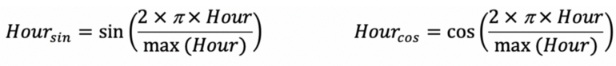

70 Feature Engineering, Time Series
TOC
- Misc
- Transformations
- Engineering
- Misc
- Decimal Date
- Calendar Features
- Clustering
- Lags
- Rolling
- Interactions
- Interval groups
- Days since
- Fourier Transform
- Change point detection
- Domain Specific
- Missing Values
Misc
- Packages
- R:
- {feasts, tsfeatures, timetk, theft, catch22}
- theft incorporates many of the R packages (and maybe Python too)
- timetk incorporates tsfeatures package,
timetk::tk_tsfeatures- Example: Take weekly dataset and compute tsfeatures for each quarter
- {feasts, tsfeatures, timetk, theft, catch22}
- R:
new_dat <- dat %>%
mutate(date_rounded = lubridate::round_date(date, "quarter")) %>%
group_by(date_rounded) %>%
timetk::tk_tsfeatures(
.date_var = date,
.value = price,
.features = c("median", "frequency", "stl_features", "entropy", "acf_features"),
.prefix = "tsfeat_"
) %>%
ungroup().features is for specifying the names of the features from tsfeatures that you want to include
.prefix is the prefix for the newly created column names
“date_rounded” is a column that has the date for each quarter
{fractaldim} (paper) - The fractal dimension of a series measure its roughness or smoothness.
Python: {{kats}}
Other: hctsa
Issue: Features that aren’t available during the forecast horizon aren’t useful.
- Solutions:
- But you can use a lagged value of predictor or an aggregated lagged value e.g. averages, rolling averages, tiled/windowed averages
- example: average daily customers for the previous week.
- Some features are one value per series, but the functions could be fed a lagged window (length of horizon?) of the whole series and generate a value for each window.
- But you can use a lagged value of predictor or an aggregated lagged value e.g. averages, rolling averages, tiled/windowed averages
- Solutions:
Difference features that are really linear or have little variation. Change in value can be more informative
Forecasting shocks is difficult for an algorithm
- It can better to smooth out (expected) shocks (Christmas) in the training data and then add an adjustment to the predictions during the dates of the shocks.
- The smoothed out data will help the algorithm produce more accurate predictions for days when there isn’t an expected shock.
- Examples of shocks that may need training data to have manual adjustments and not be smoothed by an algorithm
- one-time spikes due to abnormal weather conditions
- one-off promotions
- a sustained marketing campaign that is indistinguishable from organic growth.
Models with large numbers (100s) of features increases the opportunity for feature drift

Package feature set comparison
- From paper, An Empirical Evaluation of Time Series Feature Sets
- Misc
- I think feasts ⊆ tsfeatures ⊆ catch22 ⊆ hctsa
- kats is a facebook python library
- theft package integrates all these packages
- feature redundancy
.jpg)
- Says catch22 features have fewer things in common with each other that the other packages
- Computation time

- No surprise hctsa takes the most time. It’s like 7K features or something stupid
- tsfeatures,feasts are pretty disappointing
- catch22 is excellent
Tranformations
- Logging a feature can create more compact ranges, which then enables more efficient neural network training
- Log before differencing (SO post)
- step_normalize(all_predictors)
- actually standardizes the variables
- If you’re using predictors on different scales
- lm (and AR) are scale invariant, so not really necessary for those models
- Smoothing
- LOESS (LOcally WEighted Scatter-plot Smoother)
- Weights are applied to the neighborhood of each point which depend on the distance from the point
- A polynomial regression is fit at each data point with points in the neighborhood as explanatory variables
- Some robustness to outliers (by downweighting large residuals and refitting)
- “span”: the distance from each data that considered the neighborhood is controlled by this argument
- default: 0.75
- < 1: the value represents the proportion of the data that is considered to be neighbouring x, and the weighting that is used is proportional to 1-(distance/maximum distance)3)3, which is known as tricubic
- Choosing a value that’s too small will result in insufficient data near x for an accurate fit, resulting in a large variance
- Choosing a value that’s too large will result in over-smoothing and a loss of information, hence a large bias.
- “degree of the polynomial”: degree of the polynomial regression used to fit the neighborhood data points
- default: 2 (quadratic)
- High degree: provides a better approximation of the population mean, so less bias, but there are more factors to consider in the model, resulting in greater variance.
- Higher than 2 typically doesn’t improve the fit very much.
- Lower degree: (i.e. 1, linear) has more bias but pulls back variance at the boundaries.
- Example: {ggplot}
- LOESS (LOcally WEighted Scatter-plot Smoother)
ggplot(data, aes(x = time, y = price)) +
geom_line(alpha = 0.55, color = "black") +
geom_smooth(aes(color = "loess"), formula = y ~ x, method = "loess", se = FALSE, span = 0.70) +
scale_color_manual(name = "smoothers", values = c("ma" = "red", "loess" = "blue"))- Example: base r
loess_mod <- stats::loess(price ~ time, data = dat, span = 0.05, degree = 4)
dat$loess_price <- fitted(loess_mod)- Cubic Regression Splines
- Example: {mgcv}:
mgcv::gam(price ~ s(time, bs = "cs"), data = data, method = "REML")$fitted.values
- Example: {mgcv}:
Engineering
- Misc
- Tidymodels
- date var needs to be role = ID for ML models
- Tidymodels
- Decimal Date
- recipe::step_date(year_month_var, features = c(“decimal”))
- Calendar features
modeltime::step_timeseries_signaturecreates a set of calendar features- calandar variables
- day of the month, day of the year, week of the month, week of the year, month, and year
- hour of the week (168 hours/week)
- minute, hour
- morning/afternoon/ night
- Daylight Savings - At one point in the year, we have 23 hours in a day, and in another time, we have 25 hours in a day
- If using a
smooth::adammodel, then it shifts seasonal indices, when the time change happens. All you need to do for this mechanism to work is to provide an object with timestamps to the function (for example, zoo).
- If using a
- Leap Year
- Becomes less important when we model week of year seasonality instead of the day of year or hour of year
- As splines
- Example: {tidymodels}
step_mutate(release_year = year(release_date),
release_week = week(release_date)) %>%
step_ns(release_year, deg_free = tune("deg_free_year")) %>%
step_ns(releas_week, deg_free = tune("deg_free_week"))may need lubridate loaded for the mutate part
can also use a basis spline (step_bs)
Example: {mgcv}
.png)
ctamm <- gamm(temp ~ s(day.of.year, bs = "cc", k=20) + s(time, bs = "cr"),
data = cairo,
correlation = corAR1(form = ~1|year))From pg 371, “Generalized Additive Models: An Introduction with R, 2nd Ed” (See R/Documents/Regression)
Highly seasonal so uses a cyclic penalized cubic regression spline for “day.of.year”
10 peaks and 10 valleys probably explains “k = 20”
With regression models, you have to be careful about encoding categoricals/discretes as ordinal (i.e. integers). Linear regression does not model non-monotonic relationships between the input features and the target while tree models do.
- For example, the raw numerical encoding (0-24) of the “hour” feature prevents the linear model from recognizing that an increase of hour in the morning from 6 to 8 should have a strong positive impact on the number of bike rentals while a increase of similar magnitude in the evening from 18 to 20 should have a strong negative impact on the predicted number of bike rentals.
- Options
- one-hot encoding for small cardinality (e.g. hours) and binning for large cardinality features (e.g. minutes)
- spline tranformation
- reduces number of features with comparable performance to one-hot
- period isn’t used, just here (examples) for reference to the number of splines chosen
- num_knots = num_splines + 1
- degree 3 was used in the sklearn tutorial
- sklearn also has an extrapolation=“periodic” arg
- “periodic splines with a periodicity equal to the distance between the first and last knot are used. Periodic splines enforce equal function values and derivatives at the first and last knot. For example, this makes it possible to avoid introducing an arbitrary jump between Dec 31st and Jan 1st in spline features derived from a naturally periodic “day-of-year” input feature. In this case it is recommended to manually set the knot values to control the period.”
- don’t see this arg in step_bs or step_ns
- sklearn also has an extrapolation=“periodic” arg
- Examples
- hour feature (period = 24, num_splines = 12)
- weekday (day of the week, numeric) feature (period=7, num_splines=3)
- month (period=12, num_splines=6)
- spline transform + step_kpca_poly or step_kpca_rbf
- produced best results in sklearn tutorial
- kernel function smooths out the spline
- add kpca_poly allows a regression model to capture non-linear (spline) interactions (kpca_poly)
- boosted trees naturally capture these features
- Example in sklearn tutorial used n_components=300 in elasticnet regression which seems crazy, but their point was that if you were to create non-linear interaction features manually it’d be in the thousands
- Using one-hot features instead of splines would require 3 or 4 times the number of components to reach the same performance which substantially increases training time.
Clustering
- See Clustering, Time Series for details
Lags
- If there is a gap period between the training and the validation (or test) set, all lags should be larger than this period
- Sometimes predictions will have to be made with data that isn’t up-to-date. So your model training should mimic this.
- {recipe}
- If there is a gap period between the training and the validation (or test) set, all lags should be larger than this period
recipe::step_lag(var, lag: 4:7)creates 4 lagged variables with lags 4:7
{slider} - more sophisticated way without data leakage
SCORE_recent = slider::slide_index_dbl(SCORE,
date,
mean,
na.rm = TRUE,
.before = lubridate::days(365*3),
.after = -lubridate::days(1),
.complete = FALSE)
- after = -lubridate::days(1) says don’t include current day
- “prevents data leakage by ensuring that this feature does not include information from the current day in its calculation”
- not sure exactly why including the current day would cause data leakage
- “prevents data leakage by ensuring that this feature does not include information from the current day in its calculation”
- {dplyr} + {purrr}
calculate_lags <- function(df, var, lags){
map_lag <- lags %>% map(~partial(lag, n = .x))
return(df %>% mutate(across(.cols = [{{var}}]{style='color: goldenrod'}, .fns = map_lag, .names = "{.col}_lag[{lags}]{style='color: #990000'}")))
}
tsla %>%
calculate_lags(close, 1:3)- Rolling
- feasts functions
- tiling (non-overlappping) features
- sliding window (overlapping) features
- exponentially weighted moving average on lags (more recent values get more weight)
- Helps smooth out you lags if your data is noisy
- Might be easier to just smooth the outcome
- H2O’s weight parameter, alpha, has a range between 0.9 and 0.99
- Example: smoothed over 2 days
- sales, 1 day ago = 3; 2 days ago = 4.5; and alpha = 0.95
- smoothed sales = [3.0*(0.95^1) + 4.5*(0.95^2)] / [(0.95^1) + (0.95^2)] = 3.73
- Example: smoothed over 2 days
- (regular) moving averages
- feasts functions
dt_ma = data.table::frollmean(data[, 2], n = window, align = "right", fill = NA, algo = "fast")
rcpp_ma = RcppRoll::roll_mean(data[, 2], n = window, align = "right", fill = NA- {data.table} looks to be slightly faster than {RcppRoll} in a benchmark
- Both are substantially faster than {TTR} and base R. {zoo}’s was slowest
- {TTR} produced different values (floating point precision) than the other packages
- Both are substantially faster than {TTR} and base R. {zoo}’s was slowest
- Descriptive statistics
- Example: (weekly) units sold
- metrics: mean, standard deviation, minimum, maximum, 25th percentile, 50th percentile, and 75th percentile
- rolling time windows: 1, 2, 3, 4, 12, 26, 52 weeks prior
- Example: rolling average sales from the previous year
- e.g. 2-week average sales of the previous year
- Example: (weekly) units sold
- Interactions
- examples
- interactions between lags
- between workday (indicator) and hour
- distinguishes between 8am on a monday and 8am on a sunday
- spline transform hour and create interaction with workday
- main effects(x + y) and interactions (xy) only are included, not variables of the form, x2
- examples
- “days_since” a specific date
- check scatter (e.g. price vs last review date) and see if variance is heteroskedastic but should probably be log transformed
# think this data only has year and month variables (numeric?)
step_mutate(days_since = lubridate::today() - lubridate::ymd(year, month, "01"))
# last review is a date var
step_mutate(last_review = as.integer(Sys.Date() - last_review))- ** consider using the inverse: 1 / number of days since **
- This keeps the value between 0 and 1
- Have to watch out for 0s in the denominator and replace those values with 0 or replace the count with a really small fraction
- Examples
- log days since the brand or product first appeared on the market
- The number of weeks since the product was last sold
- Interval groups
- creating group indicators for different intervals in the series
- Probably involves some sort of clustering of the series
- Maybe this is what “wavelets” are.
- Fourier transform (sine, cosine)
- Decision trees based algorithms (Random Forest, Gradient Boosted Trees, XGBoost) build their split rules according to one feature at a time. This means that they will fail to process these two features simultaneously whereas the cos/sin values are expected to be considered as one single coordinates system.
- handled differently in different articles so ¯\_(ツ)_/¯
- https://towardsdatascience.com/how-to-handle-cyclical-data-in-machine-learning-3e0336f7f97c
- Example: tranforming an hour variable instead one-hot encoding
- The argument is that since time features are cyclical, their transform should be a cyclical function. This way the difference between transformed 1pm and 2pm values are more closely related than if they were one-hot encoded where the difference between 1pm and 2pm is the same as 1pm and 8pm.
- from sklearn article
period <- 24 # hours variable
var <- dat$hour
sin_encode <- function (x, period) {sin(x / period * 2 * pi){style='color: #990000'}[}]{style='color: #990000'}
cos_encode <- function (x, period) {cos(x / period * 2 * pi){style='color: #990000'}[}]{style='color: #990000'}
sin_encode(x = var, period = period)step_harmonic
sunspots_rec <-
recipe(n_sunspot ~ year, data = sun_train) %>%
step_harmonic(year, frequency = 1 / 11, cycle_size = 1, # sunspots happen every 11 yrs
role = "predictor",
keep_original_cols = FALSE)- Change Point Detection
- Persistent Homology Notes from Topological Change Point Detection
- topological method
- Classifies the state of a set of features over a sliding window where the states are normal (incoherent), onset (partially coherent), synchronized (fully coherent)
- Python has a library that does this stuff, {geotto-tda}
- For each window a 2-D pearson dissimilarity matrix is computed and a Vietoris-Rips persistence score is calculated “up to homology 2.” Repeat for each window.
- the amplitude, persistent entropy and number of diagram points per homology dimension are calculated for each resulting persistence diagram resulting in a feature vector (or maybe its a matrix)
- tuning parameters
- window size
- stride (how many steps the window slides)
- coherence threshold (classification threshold for “synchronized”)
- Example: 0.8
- onset threshold (classification threshold for “onset”)
- Example: 0.5
- Use the trained model to predict classification categories that can be used as a feature.
- This state is supposed to be predictive of whether a change point is about to happen in the time series
- Bayesian Change Point Indicator Regression
- Persistent Homology Notes from Topological Change Point Detection
- Domain Specific
- Net calculation
- recipe::step_mutate(monthly_net = monthly_export - monthly_import)
- Amount of the last sale were also added as features. We also added the
- Total volume of units sold for each product up to that date
- Indicates of long-term historical sales performance
- Net calculation
- Missing Values
- When aggregating values (e.g. daily to weekly), information about missing values is lost
- Create a variable that is the sum of missing values over the aggregated period
- Missing rows in the original dataset (due to a lack of sales on those particular dates) can also be counted and added to the dataset